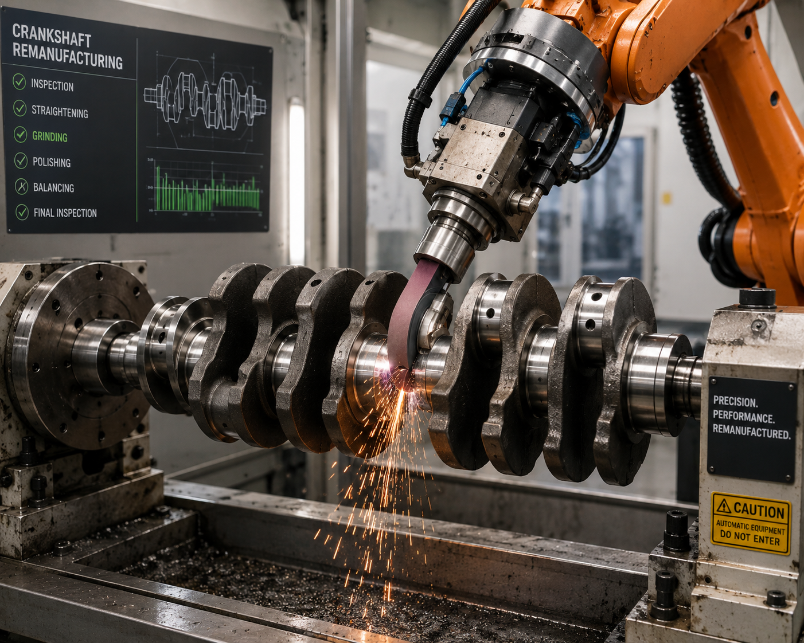
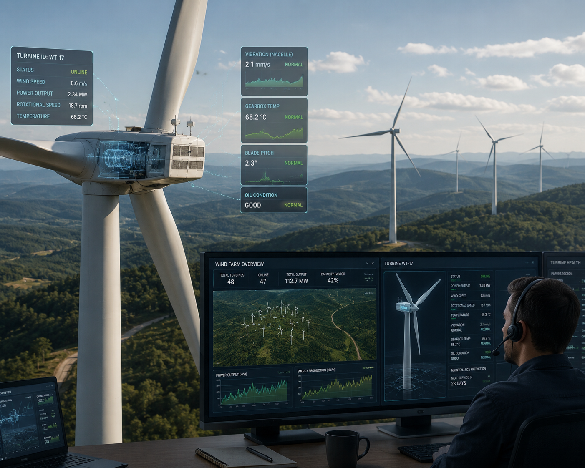
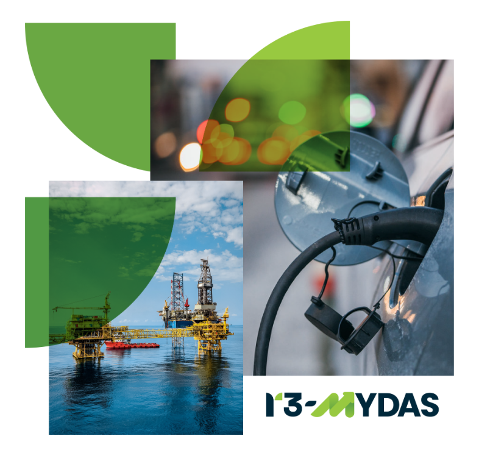
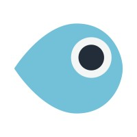

Una visione dell'industria del domani
Le innovazioni di R3-Mydas a We Make Future 2026
Scopri il cambiamento



R3-MYDAS contribuisce ad accelerare la transizione nel settore manifatturiero
Il progetto si concentra sullo sviluppo di un framework multi-attore che integra tecnologie digitali sostenibili ed innovative, meccatronica avanzata e nuovi approcci di design incentrati sulla persona.

Il ruolo di Deep Blue nel progetto
In questo progetto, ci occupiamo dell'analisi della forza lavoro per anticipare le future competenze che i lavoratori necesiteranno per rispondere all'introduzione delle tecnologie sviluppate in R3-Mydas. Utilizziamo strumenti quali: personas, scenari, artefatti dal futuro ed un framework sviluppato appositamente - la skills transformation map - per studiare le persone ed assicurare che le tecnologie siano costruite sulla base delle loro necessità. Ci occupiamo inoltre dell'assessment etico, assicurando la conformità ai requisiti etici e legali dei casi studio presenti nel progetto.